被舞台感動
從每個鏡頭開始，TWICE 的節奏感與熱情感染力，就像一張張清新明亮的青春明信片。
TWICE Fandom Story
從一張張舞台剪影開始，我們陪著 TWICE 在笑聲、動作與旋律裡成長。 追星，不只是關注偶像，而是把每一次熱愛都化成鼓舞，讓日常也閃耀著青春的光。
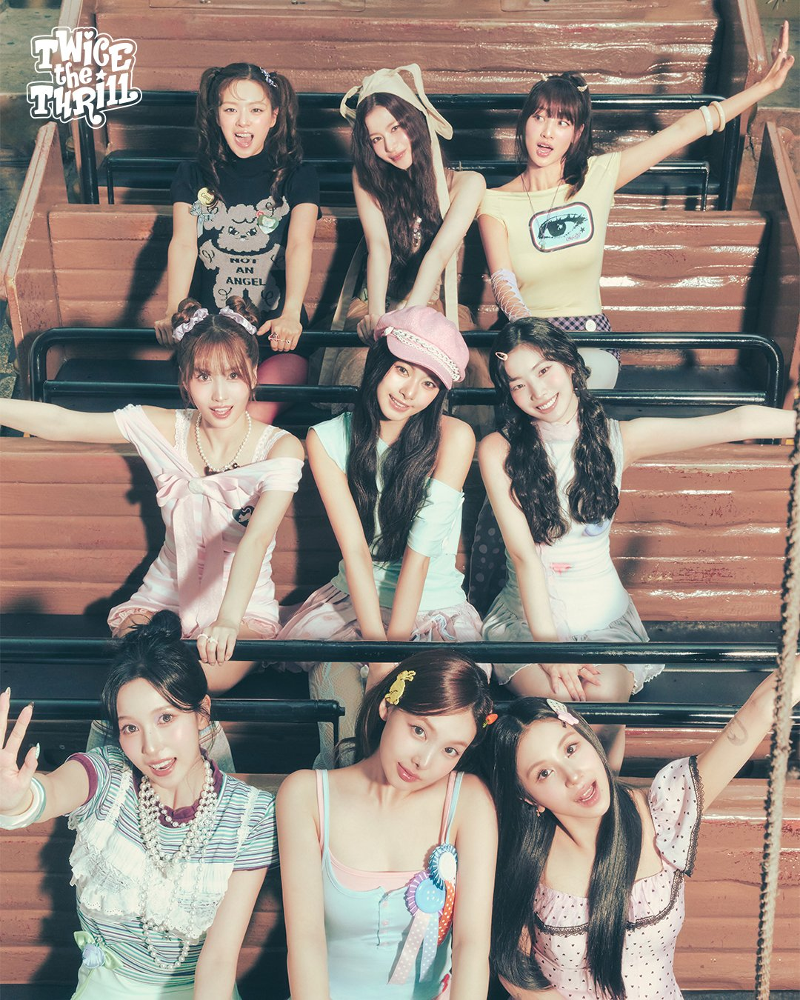
追星初心
我們第一次被 TWICE 打動，往往不是因為一首歌，而是那種從舞台開始， 連笑容都讓人忍不住想跟著開心起來的能量。青春的節奏、清爽的旋律、 成員們互相照應的眼神，都像是把一個人從疲憊裡拉回到最真實的歡笑裡。
追星不只是追隨偶像，而是陪著她們一起成長；不只是關注每一個舞台， 更是記住每一次努力、每一段故事，將正能量帶回生活，讓每一天都多了一點光。
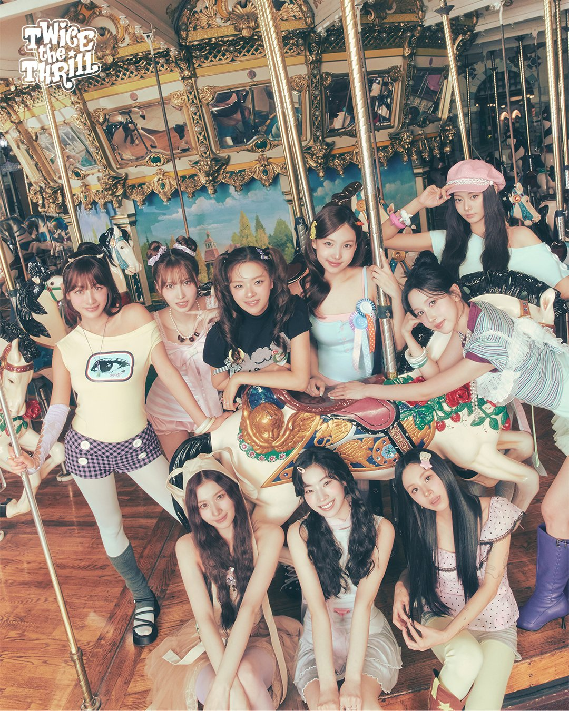
從每個鏡頭開始，TWICE 的節奏感與熱情感染力，就像一張張清新明亮的青春明信片。
她們的笑容、眼神與互動，給人安定與幸福，讓人心裡自然想靠近、想守住這份青春。
追星是一種溫柔的日常儀式，讓每一個忙碌的時刻都因為熱愛而多了一點光。
成員魅力
自信活潑的舞台氣場，總能把每一個畫面都點亮得極有感染力。
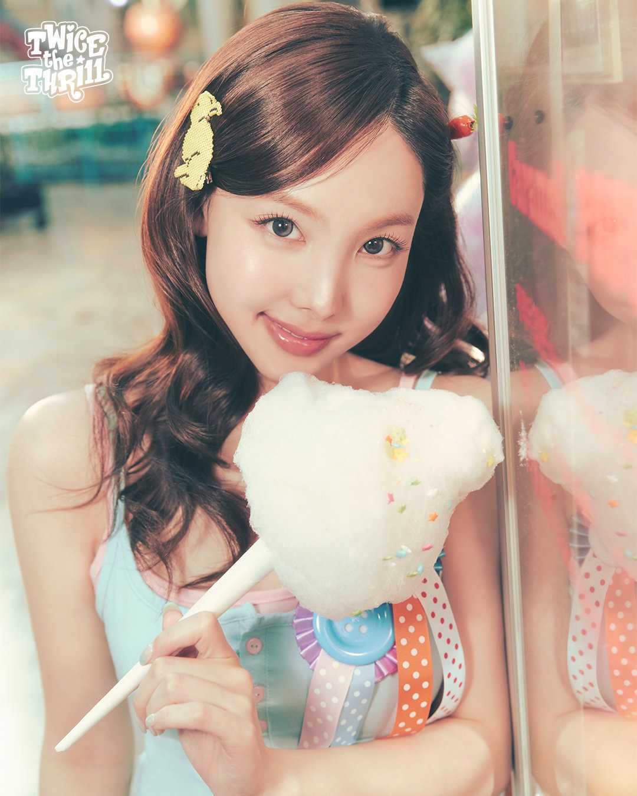
穩定俐落的氣質完美平衡了舞台節奏，讓每一個動作都更有層次。
熱情與活力在舞步裡流動，像是把青春直接變成一種鼓動。
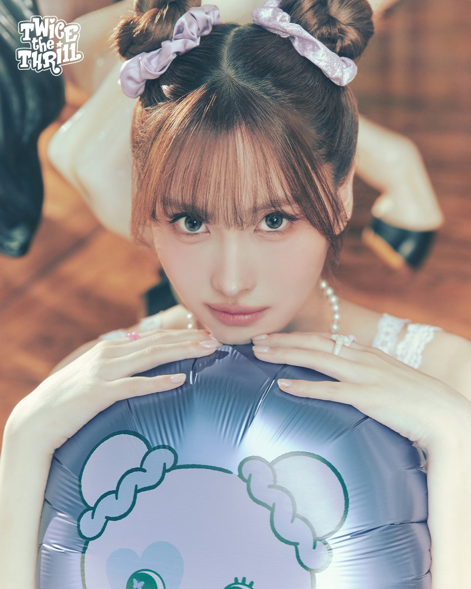
清澈微笑與甜美氣質，讓舞台看起來像一張柔和而明亮的春日插畫。
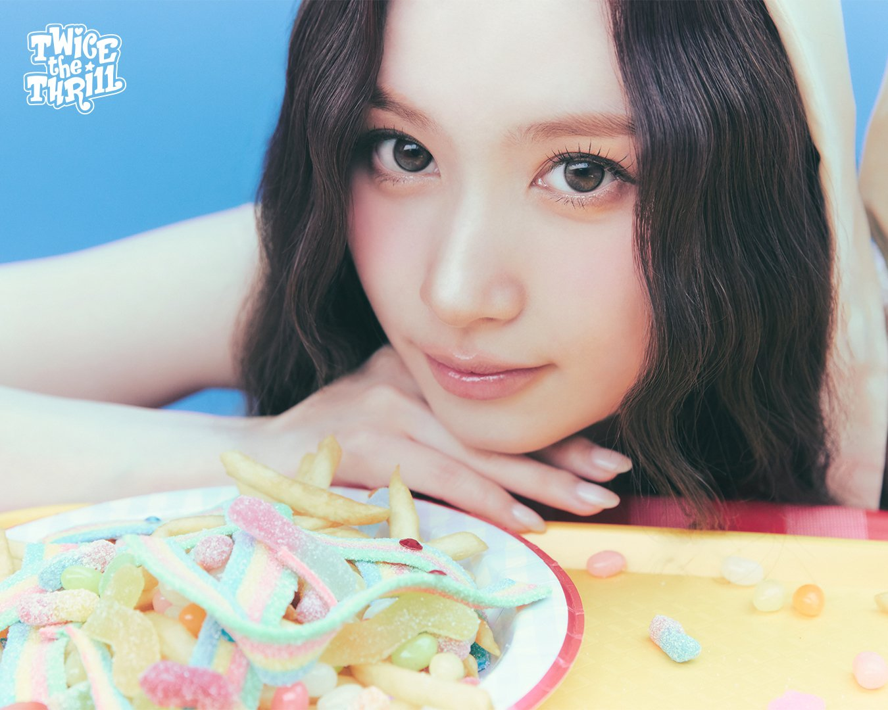
穩定的舞台掌控力與細緻感，讓每一次亮相都令人安心且有力量。
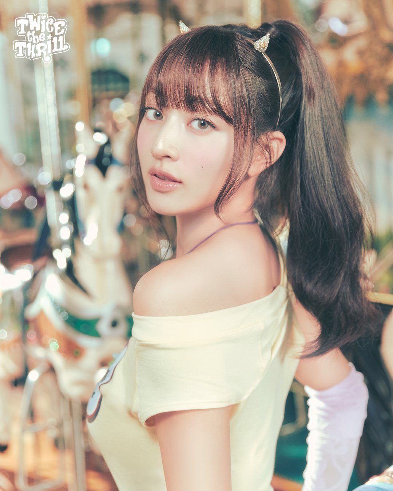
可愛與成熟兼具，簡單幾個動作就能讓人記住她的存在感。
恬淡而清澈的氣息，總讓畫面增添一種靜靜萌動的溫柔感。
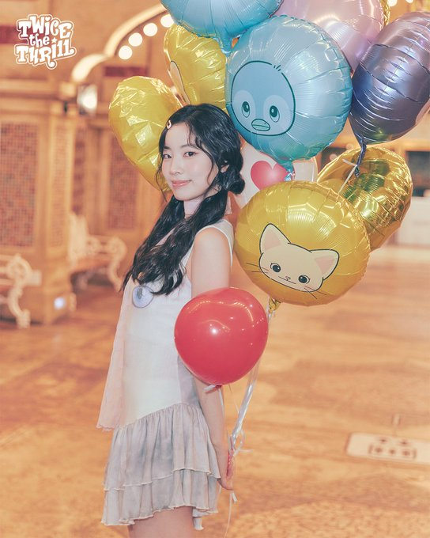
活潑而天真的氣質，讓舞台裡的每一個小細節都顯得格外可愛。
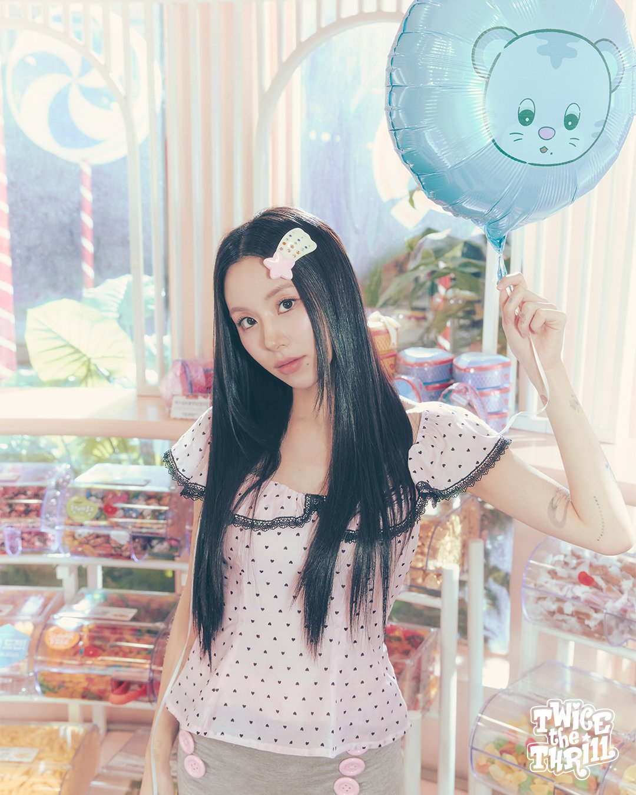
從表情到舞步都帶著自然的清新感，讓人忍不住一再回頭看。
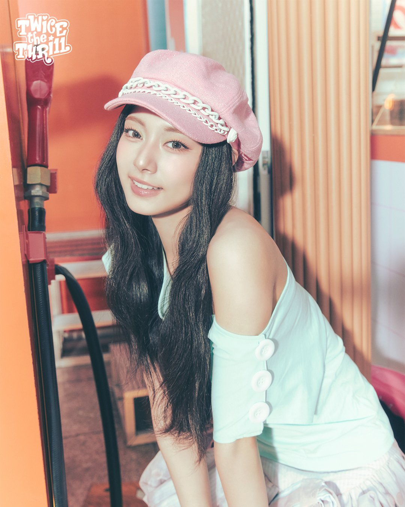
動畫音樂世界
對 TWICE 的愛不只停留在聲音，也延伸到每一個畫面中的情緒。當音樂與動畫結合， 每一段旋律都像被彩色墨水重新描繪，帶出一種明亮、柔和又帶點夢境感的氛圍。
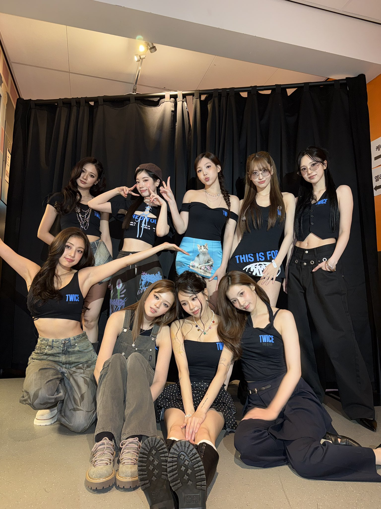
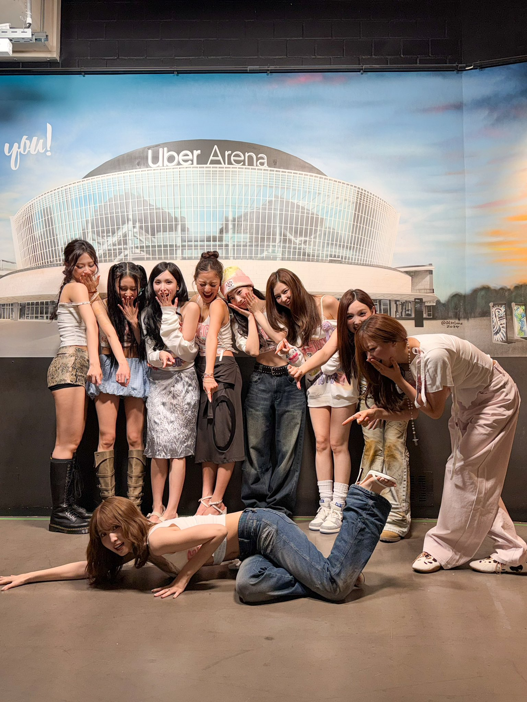
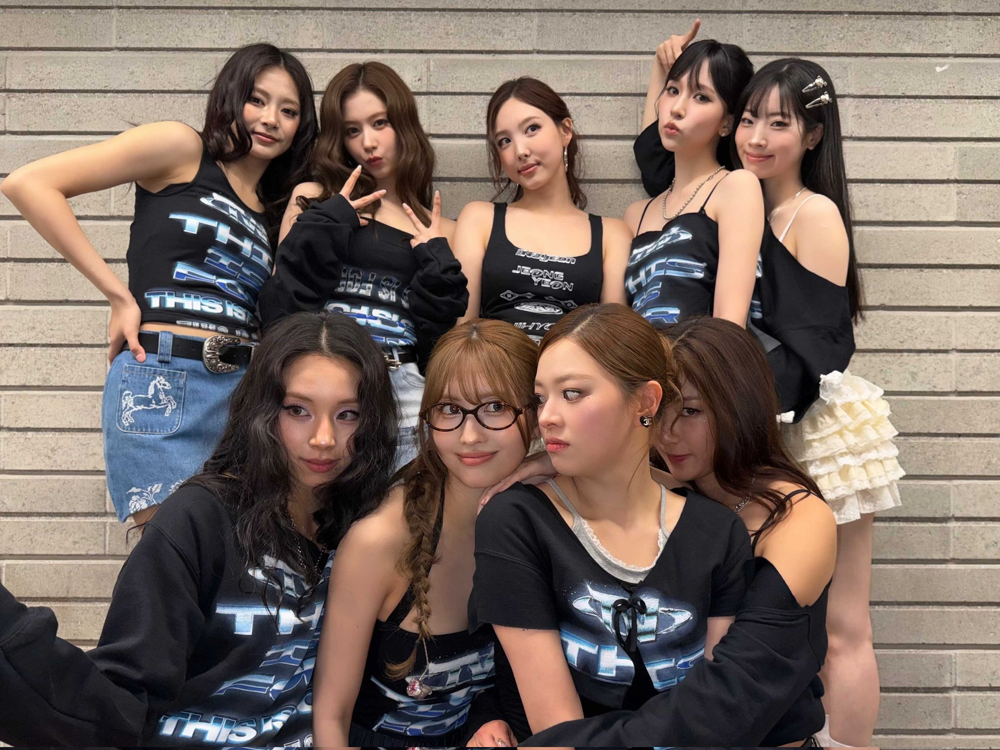
焦點單曲特輯
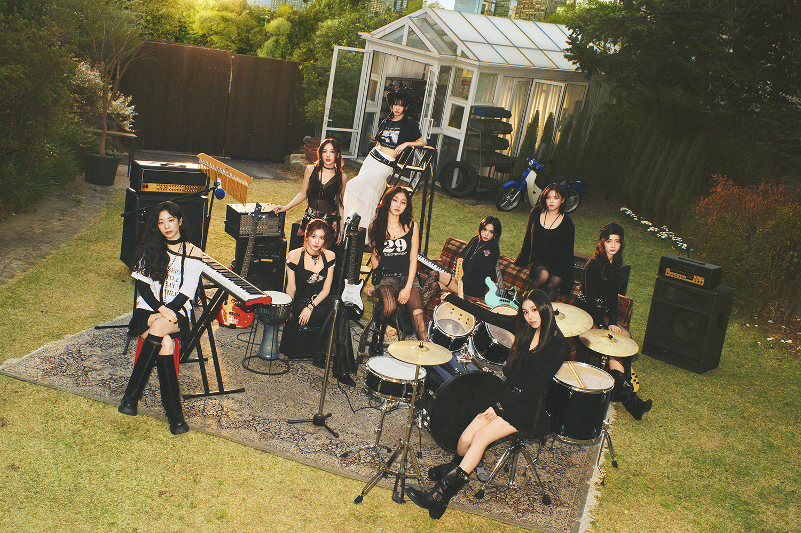
《Like 1》在旋律與動態中寫下了最真摯的青春宣言：即使路途有些不確定， 只要有彼此的陪伴，心境就能被安定與溫暖照亮。這首歌的魅力，不只是好聽， 更在於它像是一段被小小幸福點亮的回憶，讓每一位粉絲都能找到屬於自己的情緒共鳴。
動畫 MV 的色彩與節奏，讓歌曲的情感更有層次：明亮的畫面、細密的情緒切換、 以及每個成員在畫面中的精準動態，像是把「陪伴」與「成長」兩個詞寫得極其鮮明。